8.2用二分法求方程的近似根
2.实验题：
（1）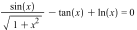
MATLAB程序编辑如下：
1.主函数：
%二分法方程求根
figure(1);
l=ezplot('sin(x)/sqrt(1+x^2)-tan(x)+log(x)/log(10)',[5 20]);
set(l,'Color','red');
hold on;
l=ezplot('0',[-5
20]);
set(l,'Color','black');
hold off;
title('待求根函数图象')
legend('y=f(x)','y=0')
grid on;
pause;
%数据输入模块
A=input('请输入求根区间\n');
eps=input('请输入误差限eps\n');
a=A(1);
b=A(2);
x0=0;
i=0;
%二分法求根模块
if(ff(a)*ff(b)>0)
fprintf('may no
solution!');
else
while(abs(a-b)>eps*abs(b))
x0=(a+b)/2;
f=ff(x0);
if(f*ff(a)>0)
a=x0;
else
b=x0;
end
x0=(a+b)/2;
i=i+1;
end
%数据输出与作图模块
fprintf('方法收敛!\n');
format long;
fprintf('计算结果:\n')
x0
fprintf('计算次数:\n')
i
x=A(1):0.01:A(2);
f=ff(x);
figure(2);
plot(x,f,'b',x,0*f,'k',x0,0,'ro');
grid on;
title('计算结果');
legend('y=f(x)','y=0','root');
end
2.子函数
%待求根函数
function F=ff(x)
F=sin(x)./sqrt(1+x.^2)-tan(x)+log(x)./log(10);
MATLAB程序运行结果下：
1. 数值解
从图像上看出方程有很多根为了演示程序功能只计算其中的一个根。
>>
BM
请输入求根区间
[7
7.5]
请输入误差限eps
0.00001
方法收敛!
计算结果:
x0 =
7.03982543945313
计算次数:
i =
13
>>
分析结果程序二分了13次达到预定精度，结果为x=7.03982543945313
图象比对：
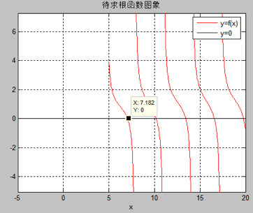
运行程序后程序会先画出函数的图象大概确定求根的区间，图中可以看到在7.182附近有方程的根。故求根区间选择在[ 7 7.5]。
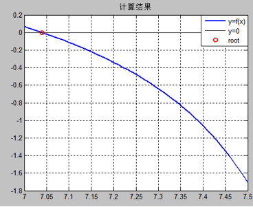
从计算结果图中看出求出来的根（红色的圈）的位置正是y=f（x）与y=0交点，即
f（x）=0的根。
（2）
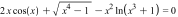
MATLAB程序编辑如下：
1.主函数：
%二分法方程求根
figure(1);
l=ezplot('2*x*cos(x)+sqrt(x^4-1)-x^2*log(x^3+1)');
set(l,'Color','red');
hold on;
l=ezplot('0');
set(l,'Color','black');
title('待求根函数图象')
legend('y=f(x)','y=0')
hold off;
grid on;
pause;
%数据输入模块
A=input('请输入求根区间\n');
eps=input('请输入误差限eps\n');
a=A(1);
b=A(2);
x0=0;
i=0;
%二分法求根模块
if(ff1(a)*ff1(b)>0)
fprintf('may no
solution!');
else
while(abs(a-b)>eps*abs(b))
x0=(a+b)/2;
f=ff1(x0);
if(f*ff1(a)>0)
a=x0;
else
b=x0;
end
x0=(a+b)/2;
i=i+1;
end
%数据输出与作图模块
fprintf('方法收敛!\n')
fprintf('计算结果:\n')
x0
fprintf('计算次数:\n')
i
x=A(1):0.001:A(2);
figure(2);
plot(x,ff1(x),'b',x,0*x,'k',x0,0,'ro');
grid on;
title('计算结果');
legend('y=f(x)','y=0','root');
end
2.子函数：
%待求根函数
function F=ff1(x)
F=2*x.*cos(x)+sqrt(x.^4-1)-x.^2.*log(x.^3+1);
运行结果：
1.数值结果：
>>
BM1
请输入求根区间
[1.2
1.4]
请输入误差限eps
0.00001
方法收敛!
计算结果:
x0 =
1.32037963867187
计算次数:
i =
14
>>
观察程序给出的结果发现经过了14次迭代达到预定的相对精度，计算所得到的结果为x=1.32037963867187。
图象：
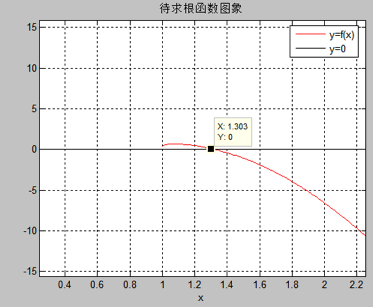
运行程序后将会自动画出待求根函数的图象，可以看出根在1.2到1.4之间故求根区间为[1.2 1.4]
计算结果示意图：
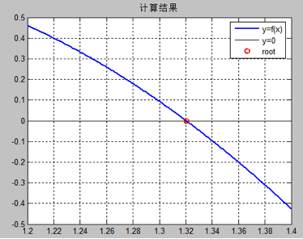
从计算结果是一图中看出所求得的根（红圈）在y=f（x）与y=0的交点上。计算结果准确。
8.3用牛顿迭代法求方程的近似根
2.实验题：
（1）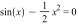
MATLAB程序编辑如下：
注：（由于该程序调用了符号自动微分函数，故使用时候只要输入待求根函数形式即可，不需要再编写待求根函数的子函数，通用性较好，但是只适合于可求解析导数的函数。两道题使用同一个函数）
主函数：（利用牛顿法进行求根计算并作图）
%牛顿迭代法求方程的根
%函数符号表达式与图象预处理模块
syms x;
f=input('请以x为为变量输入f(x)!\n');
df=diff(f);
l=ezplot(f);
set(l,'Color','red');
hold on;
l=ezplot(df);
set(l,'Color','blue');
l=ezplot('0');
set(l,'Color','black');
axis auto;
title('f(x)与f"(x)的图象');
legend('f(x)','f"(x)','y=0');
grid on;
pause;
%数据录入模块
x0=input('请输入估计的初始值:\n');
eps=input('请输入误差限度eps:\n');
N=input('请输入最大迭代次数:\n');
%牛顿迭代法计算模块
i=0;
if(ft(df,x0)==0)
fprintf('no
solution!');
else
xprev=x0-ft(f,x0)/ft(df,x0);
xn=x0;
while(abs(xn-xprev)>eps*abs(xn))
xprev=xn;
xn=xn-ft(f,xn)/ft(df,xn);
i=i+1;
if(i>N)
break;
end
end
%数据输出与作图模块
if(i<=N)
fprintf('方法收敛!\n');
fprintf('计算结果:\n')
format long;
xn
fprintf('计算次数:\n')
i
plot(xn,0,'bo');
title('计算结果');
legend('f(x)','f"(x)','y=0','root');
hold off;
else
fprintf('bad
solution!');
end
end
子函数：（计算接收的符号型函数表达式的数值）
%根据输入的符号表达式构造一个函数
function F=ft(f,x)
F=subs(f);
MATLAB程序运行结果下：
1.数值解
运行程序NM输入符号表达式形式：
>> NM
请以x为为变量输入f(x)!
sin(x)-x^2/2
之后程序显示出f（x）与其导数的图象。程序进入等待状态。
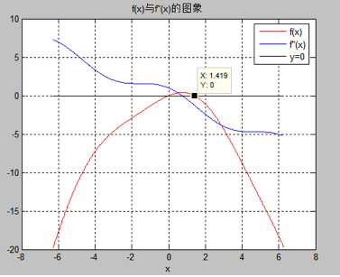
图中看出显然y=f（x）有两个根一个在0附近一个在1.419附近，显然在这两个x处， f（x）的导数都不为零。故分别求着两处的根。
继续按提示输入后面的条件求得第一个根：
请输入估计的初始值:
0.1
请输入误差限度eps:
0.00001
请输入最大迭代次数:
200
方法收敛!
计算结果:
xn =
0
计算次数:
i =
6
运行结果显示程序迭代了6次最终结果即原方程的根为x=0。将结果带入原方程比较毫无疑问这一定是该方程的根。
图像比对：
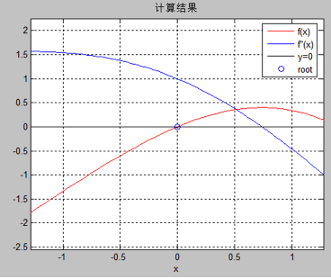
从图像中看出程序效果较好
求方程的第二个根：
重新运行程序输入一下命令：
>> NM
请以x为为变量输入f(x)!
sin(x)-x^2/2
请输入估计的初始值:
1.419
请输入误差限度eps:
0.00001
请输入最大迭代次数:
200
方法收敛!
计算结果:
xn =
1.40441482409243
计算次数:
i =
3
运行结果显示迭代次数为3，求得的方程的根为1.40441482409243。
图象比对：
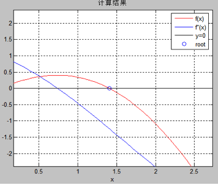
图像中看出所求得的根较为可信。
（2）
MATLAB程序运行结果下：
1.数值解
运行程序NM输入符号表达式形式：
>> NM
请以x为为变量输入f(x)!
log(x+2)-x
程序给出函数的图象并进入等待状态：
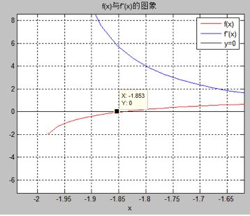
从图象中可以看出函数在x=-1.853附近有根，并且可以看出其导数在此处不为零。
继续输入命令：
请输入估计的初始值:
-1.85
请输入误差限度eps:
0.00001
请输入最大迭代次数:
200
方法收敛!
计算结果:
xn =
-1.84140566043728
计算次数:
i =
3
>>
程序运行出来的结果显示迭代了3次所得到的结果为x=-1.84140566043728
图象比对：
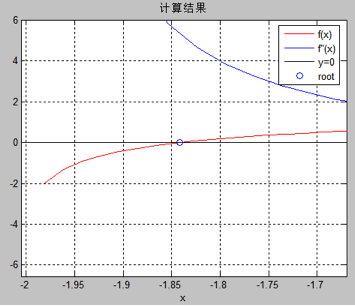
从图象中看出所求得根较可靠。
总结：二分法求方程的根原理简单，误差估计也很容易，但是需要较多的计算次数，效率较低。牛顿法收敛速度快，迭代步骤简单，但是需要求得函数的解析导数，并且根附近函数的导数值要不为零，实际上越接近零迭代次数越多迭代越慢。绝大多数函数不存在解析形式的导数比如贝塞尔函数，所以牛顿法用途有限，快速弦截法能克服牛顿法必须存在解析形式导数这一要求。